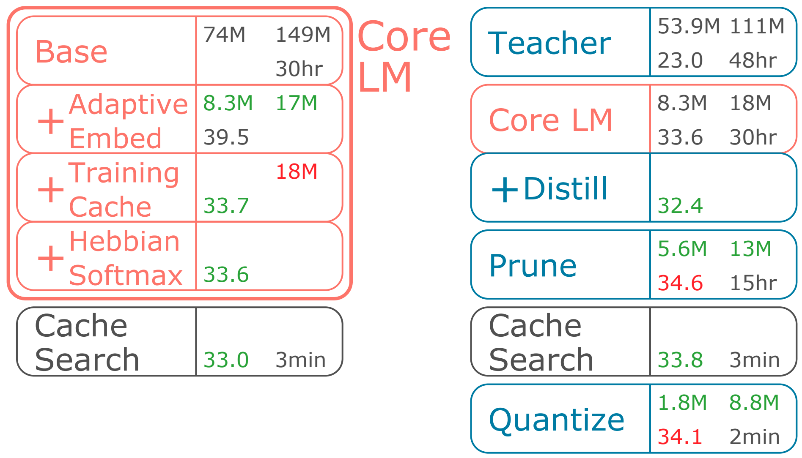

MicroNet for Efficient Language Modeling
It is important to design compact language models for efficient deployment. We improve upon recent advances in both the language modeling domain and the model-compression domain to construct parameter and computation efficient language models. We use an efficient transformer-based architecture with adaptive embedding and softmax, differentiable non-parametric cache, Hebbian softmax, knowledge distillation, network pruning, and low-bit quantization. In this paper, we provide the winning solution to the NeurIPS 2019 MicroNet Challenge in the language modeling track. Compared to the baseline language model provided by the MicroNet Challenge, our model is 90 times more parameter-efficient and 36 times more computation-efficient while achieving the required test perplexity of 35 on the Wikitext-103 dataset. We hope that this work will aid future research into efficient language models, and we have released our full source code at https://github.com/mit-han-lab/neurips-micronet.

@inproceedings{yan2020micronet,
title = {MicroNet for Efficient Language Modeling},
author = {Yan, Zhongxia and Wang, Hanrui and Guo, Demi and Liu, Zhijian and Han, Song},
booktitle = {Journal of Machine Learning Research},
year = {2020}
}
Acknowledgments: We sincerely thank Facebook Faculty Award, AWS Machine Learning Award, and AMD for sponsoring this research. We are grateful to Phillip Isola for helpful discussions.